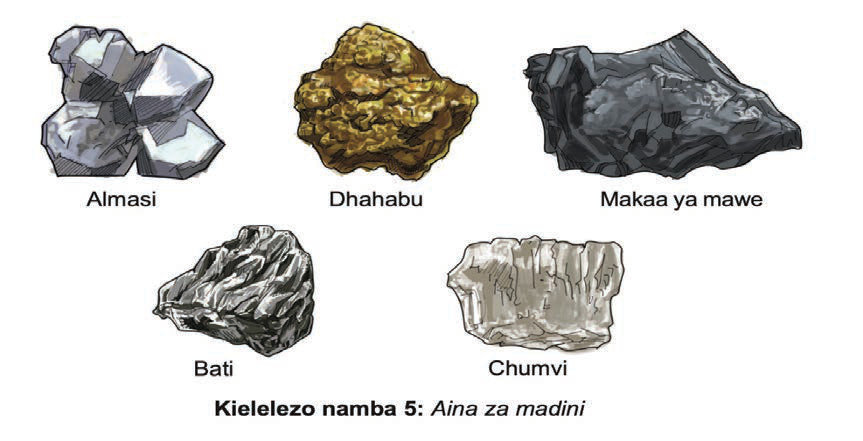

Kielelezo namba 9: Baadhi ya madini yaliyopatikana Tanganyika
Madini hayo yaliyochimbwa hayakuinufaisha Tanganyika kwa namna yoyote, bali yaliwanufaisha wakoloni. Wananchi walilazimishwa kufanya kazi ngumu migodini kwa ujira mdogo. Hawakupewa huduma bora za jamii. Wakati mwingine walipata ajali migodini na kuumia vibaya au kufa. Vilevile, walikabiliwa na magonjwa kama homa ya mapafu, mafua makali na ukosefu wa vitamini C.
Biashara wakati wa ukoloni
Biashara ni shughuli ya kuuza na kununua bidhaa au huduma. Wafanyabiashara huuza na kununua bidhaa ili kupata faida. Wateja hununua bidhaa ili kukidhi mahitaji yao muhimu ya maisha. Biashara wakati wa ukoloni ilidhibitiwa na watawala wa Kijerumani na Kiingereza. Wakoloni hao walipokuja nchini Tanganyika, walianzisha fedha kama nyenzo ya kubadilishana bidhaa. Kwa mfano, Wajerumani walianzisha matumizi ya hela iliyo julikana kama rupia. Hela hiyo ilitumika hadi karibu na mwisho wa Vita vya Kwanza vya Dunia. Kisha, Waingereza walianzisha shilingi ya Afrika Mashariki mwaka 1921. Shilingi hiyo ilitumika katika makoloni yake ya Afrika Mashariki ikiwemo Tanganyika. Wakulima wadogo walipata fedha kwa kuuza mazao yaliyolimwa kwa kulazimishwa na wakoloni. Hata hivyo, hela waliyolipwa haikulingana na thamani halisi ya mazao hayo. Katika kipindi hiki, masoko ya kuuzia bidhaa mbalimbali za wazawa kama vile matunda, kuku na nafaka yaliibuka. Katika kipindi hiki, miji kama Dar es Salaam, Tanga, Arusha, Moshi, Mbeya na Mwanza iliyokuwa kitovu cha biashara ilikua kwa kasi.